Identity, consent, relationships, reproduction, menstruation, and trauma — the full spectrum of embodied life.
This section covers sexuality, reproduction, and trauma. All sexual content uses fade-to-black — nothing explicit is described at the table. The GM must establish a Lines & Veils list and a safety word (e.g. "red light" = stop immediately, "yellow light" = adjust tone, "green light" = continue) before beginning this chapter. Players may skip or delegate any scene to the GM. No character's sexual orientation, gender identity, or reproductive status may be assigned without the player's explicit consent.
Sexual health and intimacy are central to the human experience. In Reality RPG, these topics are treated with the same mechanical rigor as any other life domain — because they are life. This page covers six interconnected systems:
Sexual orientation and gender identity as core character factors with real-world social consequences.
Consent frameworks, relationship building, and satisfaction tracking across emotional and physical levels.
STI testing, prevention, contraception, and sexual function mechanics.
Conception, trimester-by-trimester mechanical effects, prenatal care, and reproductive choices.
Cycle tracking, period management, supply logistics, and conditions like endometriosis.
Safety tools, trigger handling, and long-term recovery mechanics for sexual trauma.
Sexual orientation (who you're attracted to) and gender identity (who you are) are core identity factors, not optional accessories. They are chosen during character creation with full player agency and carry no inherent mechanical penalties. However, the world your character lives in may impose real social consequences — and that is where the mechanics engage.
During character creation, the player selects or describes their character's sexual orientation and gender identity. This is never randomly rolled. The GM cannot assign a player's identity without consent. Options include but are not limited to:
| Category | Examples | Mechanical Treatment |
|---|---|---|
| Sexual Orientation | straight, gay, lesbian, bisexual, pansexual, asexual, demisexual, queer, questioning | Identity tag on character sheet. No inherent stat modifiers. |
| Gender Identity | woman, man, non-binary, genderfluid, agender, trans woman, trans man, two-spirit, questioning | Identity tag on character sheet. No inherent stat modifiers. |
| Expression | masculine, feminine, androgynous, gender non-conforming | Social interaction modifier in environments with rigid gender norms (see below). |
Being LGBTQ+ is not a disadvantage. The mechanics reflect the reality that prejudice is the disadvantage — not the identity itself. In supportive environments, LGBTQ+ characters may actually receive community support bonuses that straight/cis characters cannot access.
Characters whose orientation or gender identity is stigmatized in their environment face minority stress — the chronic, low-grade stress of existing in a world that may not accept them. This is a real psychological phenomenon and is modeled as follows:
Maya is a trans woman living in a small conservative town (unsupportive environment). Her roommate is an ally (supportive). Each week she rolls 2d10 + RES mod against TN 10. Maya has RES 6 (mod +1). She rolls a 7 and a 3 = 10, plus +1 = 11. Success! She manages her stress this week. Next week she rolls a 2 and a 4 = 6, plus +1 = 7. Failure — she gains +3 SP. Her roommate helps her process it, granting the community support bonus of −2 to the next RES check.
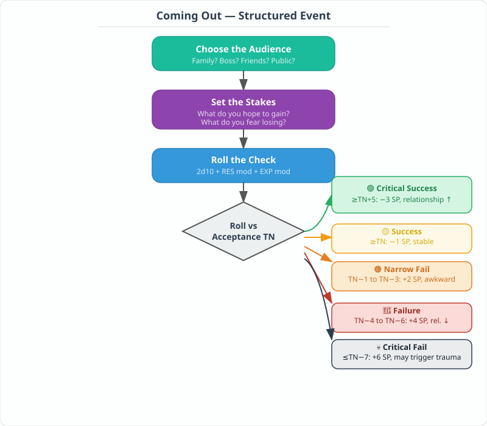
Coming out — disclosing one's orientation or gender identity to others — is a structured event in Reality RPG. It is always a player choice, never forced by the GM. The scene is resolved using the social interaction framework with the following steps:
If a coming out scene results in a critical failure, the GM must pause and check with the player. Offer to veil the worst consequences, reduce the severity, or skip ahead past the painful period. The player always has the right to say "I don't want to play through that part."
Sam (RES 7, EXP 5) wants to come out as non-binary to his manager, who has been friendly but whose views are unknown. TN = 10 (uncertain audience). Sam rolls 2d10 + 2 + 0 = 6 + 9 + 2 = 17. Critical success! His manager responds: "Thank you for trusting me. How can I support you?" Sam gains −3 SP from the relief, and his workplace relationship moves to "Trusted." The manager begins using Sam's correct pronouns, reducing his weekly minority stress to 0 SP.
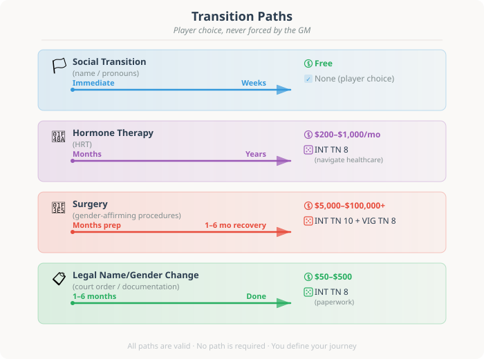
Characters who transition (socially, medically, or legally) face additional mechanical considerations:
| Action | Time | Cost | Check Required | Notes |
|---|---|---|---|---|
| Social transition (name/pronouns) | Immediate to weeks | Free | None (player choice) | May trigger coming out scenes with various audiences. |
| Hormone therapy | Months to years | $200–$1,000/month | INT check (TN 8) to navigate healthcare system | Physical changes gradual. May affect VIG during adjustment (−1 for 1–3 months). |
| Surgery | Months of prep + recovery | $5,000–$100,000+ | INT check (TN 10) to find covered provider; VIG check (TN 8) for recovery | Major life event. 1–6 months recovery. VIG −2 during recovery. |
| Legal name/gender change | 1–6 months | $50–$500 | INT check (TN 8) for paperwork | Varies widely by jurisdiction. |
Intimacy in Reality RPG is modeled across three levels — emotional, physical, and sexual — each with its own mechanics. The foundation of every intimate interaction is consent, both in-game (between characters) and out-of-game (between players at the table).
Before any intimate scene is played:
Consent between characters is modeled explicitly. Every intimate interaction requires affirmative, informed, ongoing consent. The mechanical framework:
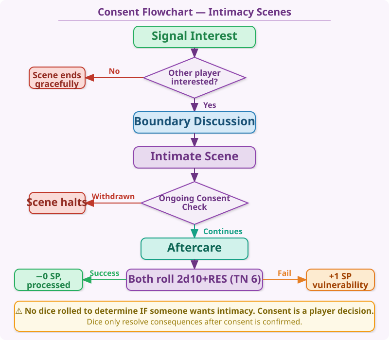
Notice that no dice are rolled to determine if someone wants intimacy. Consent is a player decision, not a random outcome. This is intentional — modeling consent as a dice roll would normalize the idea that "no" can be overcome with enough persistence. It cannot.
Relationships develop through three intimacy levels. Characters progress through them gradually, and each level has distinct mechanical effects:
Each meaningful relationship has a Satisfaction Score from 0 to 10. This score changes based on how well the characters' needs are being met:
Satisfaction changes based on key events:
All sexual content in Reality RPG uses fade-to-black. The narrative cuts away before explicit content and resumes after. Here is how it works:
Players may discuss their characters' feelings about the experience afterward, but only at the level of comfort everyone at the table has established.
GM: "Jin and Aiko have been dating for months. Tonight, after dinner, Jin reaches for Aiko's hand. Aiko's player nods — they're both comfortable proceeding. The GM describes them walking to Aiko's apartment, the conversation slowing, the tension building. 'You both know where this is going. The door clicks shut...'" [fade to black] Next scene: "Morning light filters through the blinds. You wake up tangled in sheets together. How do you feel?" Jin's player: "Relieved and happy." GM: "Okay. −2 SP for Jin, relationship satisfaction +1 to 8." Aiko's player: "Aiko feels a bit anxious about things changing." GM: "Understood. Aiko gains +1 SP from uncertainty, but −1 from overall happiness. Net 0 SP."
Sexual health encompasses STI prevention and treatment, contraception, and sexual function. Characters who are sexually active should regularly engage with these mechanics — just as real people should.
Characters should get tested regularly, especially after new sexual partners. Testing is a structured action:
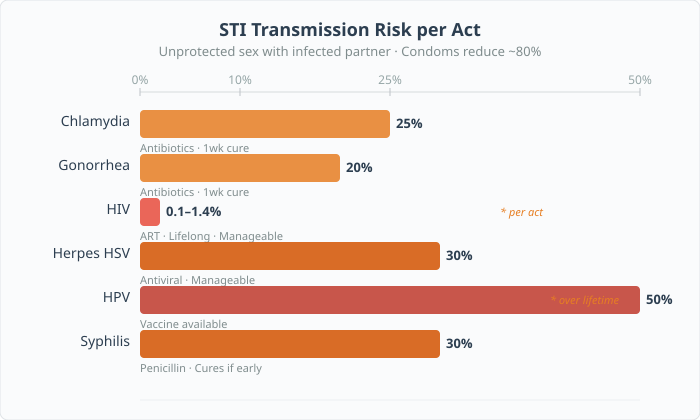
If a character contracts an STI, the GM selects from this table based on the character's exposure history (unprotected sex, number of partners, partner status). Each STI has specific mechanical effects:
| STI | Transmission Risk* | Symptoms | Mechanical Effects | Treatment |
|---|---|---|---|---|
| 🦠 Chlamydia | 10–25% | Often asymptomatic; burning during urination, unusual discharge | None if treated promptly. If untreated 3+ months: −1 VIG (PID risk). | Antibiotics. 1 visit. $20–$100. Cures in 1 week. |
| 🦠 Gonorrhea | 10–20% | Burning urination, discharge, testicular/pelvic pain | +2 SP while symptomatic. If untreated 3+ months: −1 VIG permanently. | Antibiotics (dual therapy). 1 visit. $50–$150. Cures in 1 week. |
| 🦠 HIV | 0.1–1.4% per act** | Flu-like (2–4 wks), then asymptomatic for years | Major condition. +3 SP at diagnosis. Without treatment: progressive VIG loss (−1/yr). With treatment: manageable, +1 SP/wk from med stress. | ART. Daily meds. $0–$500/mo with insurance. Lifelong. Near-normal life expectancy with treatment. |
| 🦠 Herpes (HSV-1/2) | 3–30%*** | Painful blisters/sores; recurring outbreaks | During outbreaks: −1 VIG, +2 SP. Outbreaks 2–4×/yr initially, decreasing over time. | Antiviral (valacyclovir). Reduces outbreaks 70–80%. $20–$100/mo. Manageable, no cure. |
| 🦠 HPV | 30–50% over lifetime | Usually asymptomatic; genital warts; can cause cancer | Usually no effect. High-risk: annual screening. Cervical dysplasia: −1 VIG, procedures needed. | Vaccine prevents most strains (Gardasil). $100–$400. |
| 🦠 Syphilis | 10–30% | Stage 1: painless sore. Stage 2: rash, fever. Stage 3: organ damage. | Stage 1–2: +1 SP. Stage 3 (untreated 10+ yrs): −2 VIG, permanent damage, possible death. | Penicillin injection. 1–3 visits. $20–$200. Cures if caught early. |
*Risk per act of unprotected vaginal/anal sex with an infected partner. Oral sex risk is lower. Condoms reduce risk by ~80%. **Higher for receptive anal sex. ***Higher during active outbreaks; lower with suppressive medication.
Characters who practice regular testing, use condoms consistently, and limit partners reduce their STI risk by ~90%. The GM should reward responsible characters — not punish them with random infections. A character who always uses protection and gets tested quarterly should almost never contract an STI.
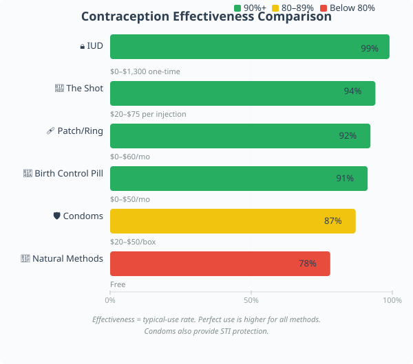
Contraception prevents unwanted pregnancy. Each method has a typical-use effectiveness rate. When a character engages in sexual activity without wanting pregnancy, the contraception's effectiveness is tested:
| Method | Effectiveness | Failure | Cost | Mechanical Details |
|---|---|---|---|---|
| 💊 Birth Control Pill | 🟢 91% | 9% | $0–$50/month | Daily. Miss 1 pill → 70%. Miss 2+ → 40%. Requires prescription. |
| 🔒 IUD (hormonal/copper) | 🟢 99% | 1% | $0–$1,300 one-time | Most effective reversible. Lasts 3–10 yrs. Insertion: VIG TN 6. Hormonal: irregular bleeding first 3 mo (+1 SP/mo). |
| 🛡️ Condoms | 🟡 87% | 13% | $20–$50/box of 12 | Also STI protection. Drunk/high → 75%. Broken = auto-failure. |
| 🌿 Natural Methods | 🔴 76–80% | 20–24% | Free | Irregular cycles (stress, PCOS): only 60%. Withdrawal alone: 78%. |
| 💉 The Shot (Depo) | 🟢 94% | 6% | $20–$75 per injection | Every 3 months. Mood changes possible (+1 SP/mo). VIG TN 8 q3mo for side effects. |
| 🩹 Patch / Ring | 🟢 91–93% | 7–9% | $0–$60/month | Similar to pill. Harder to forget → slightly more effective. |
When contraception fails (rolled or narratively determined), there is a chance of pregnancy. Roll 2d10 and compare to the failure chance:
For gameplay purposes, use these per-act pregnancy chances when contraception fails: Pill = 1%, IUD = 0.1%, Condom = 5%, Natural = 15%, No contraception = 20–25% (varies by cycle timing). Roll 1d100 or 2d10 × 5 against the percentage.
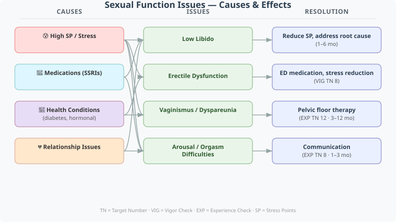
Sexual function can be affected by stress, medications, health conditions, and relationship dynamics. Characters may experience:
| Issue | Causes | Mechanical Effect | Resolution |
|---|---|---|---|
| Low libido | High SP, SSRIs, depression, relationship issues | Cannot initiate intimacy. Satisfaction −1/wk if partner wants intimacy. | Reduce SP. Address root cause. Therapy: EXP TN 10 monthly. Improves 1–6 months. |
| Erectile dysfunction | Stress, diabetes, cardiovascular, medications, anxiety | Cannot complete intimacy. +2 SP frustration. Satisfaction −1/wk. | ED medication ($20–$300/mo). Stress reduction. VIG TN 8 per encounter. |
| Vaginismus / dyspareunia | Trauma, anxiety, hormonal, medical | Painful/impossible sex. +3 SP when attempted. Satisfaction −1/wk. | Pelvic floor therapy ($100–$200/session, 6–12 sessions). EXP TN 12 per session. 3–12 months. |
| Arousal / orgasm difficulties | Stress, medications, hormonal, mismatch | Reduced satisfaction. +1 SP per unsatisfying encounter. | Communication (EXP TN 8). Sensate focus. May resolve 1–3 months. |
Pregnancy is one of the most significant life events in Reality RPG. It affects nearly every mechanical system — VIG, time, finances, stress, relationships, and life planning. Pregnancy is always a player choice in terms of whether to continue it.
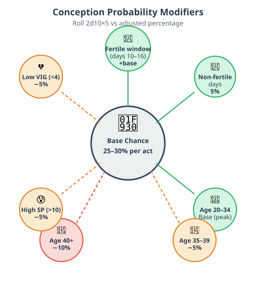
When a character engages in unprotected sexual activity (or contraception fails), pregnancy may occur. The chance depends on the character's age, health, and where they are in their menstrual cycle:
| Factor | Base Chance per Act | Modifier |
|---|---|---|
| Fertile window (days 10–16 of cycle) | 25–30% | 🟢 Peak fertility |
| Non-fertile days | 5% | Low but non-zero (sperm can live 5 days) |
| Age 20–34 | Base chance | Peak fertility years |
| Age 35–39 | −5% | Declining fertility |
| Age 40+ | −10% | Significantly reduced |
| High SP (>10) | −5% | Stress can suppress ovulation |
| Low VIG (<4) | −5% | Poor health affects fertility |
To resolve: Roll 2d10 × 5 (giving 10–100). If the result is ≤ the adjusted percentage, conception occurs.
Emma (age 28, VIG 7, SP 3) has unprotected sex during her fertile window. Base chance = 28%. No modifiers apply. She rolls 2d10 × 5: gets 4 and 7 = 11 × 5 = 55. 55 > 28, so no conception this time. If she rolled a 1 and 2 = 3 × 5 = 15, that's ≤ 28, so conception occurs.
Pregnancy lasts 9 months, divided into three trimesters. Each trimester has distinct mechanical effects:
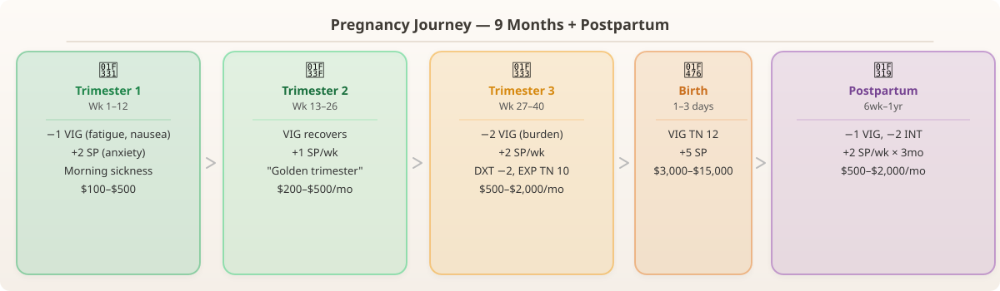
Regular prenatal care reduces complications. Characters who skip prenatal visits face escalating risks:
Complication resolution: At the end of each trimester, if the character's care level indicates a complication risk, roll 1d100. If ≤ the risk percentage, a complication occurs. The GM selects from: gestational diabetes (+1 SP/week, dietary restrictions), preeclampsia (−2 VIG, hospitalization, +5 SP), preterm labor (baby born early, NICU costs $5,000–$50,000), or miscarriage (see below).
A character's pregnancy is always under the player's control. The player decides whether the character continues the pregnancy, seeks abortion, or places the child for adoption. The GM may present social consequences based on the character's environment, but the choice itself is the player's alone.
| Gestational Age | Access Difficulty | Cost | Check Required | Notes |
|---|---|---|---|---|
| First trimester (≤12 weeks) | Easy (where legal) | $300–$800 | INT check (TN 6) to find provider | Medication abortion (pill) or in-clinic procedure. Quick, safe, low risk. |
| Second trimester (13–22 weeks) | Moderate | $800–$2,500 | INT check (TN 8) to find provider; may need travel | Fewer providers. Some states ban after 15–20 weeks. |
| Late second / third trimester | Very difficult | $2,500–$10,000+ | INT check (TN 12); often requires traveling to another state/country | Restricted or illegal in many areas. Medical emergencies only in some jurisdictions. |
Emotional impact: The character's feelings about the decision are entirely up to the player. Some feel relief (−3 SP), some feel grief (+3 SP), some feel conflicted (+1 SP). There is no "correct" emotional response. A RES check (TN 8) is made to process the decision regardless.
If a character chooses to carry the pregnancy but place the child for adoption:
Not all characters who want children can easily conceive. Fertility issues affect ~1 in 6 couples:
| Condition | Effect | Treatment | Cost | Success Rate |
|---|---|---|---|---|
| PCOS | Irregular ovulation. Conception chance halved. | Lifestyle changes, medication (letrozole/metformin) | $0–$200/month | 60–80% with treatment |
| Endometriosis | Pelvic scarring reduces fertility. See §5.3. | Surgery, hormonal treatment, IVF | $5,000–$50,000+ | 30–50% with treatment |
| Low sperm count | Conception chance reduced by 50% | Lifestyle changes, medication, IUI/IVF | $0–$20,000 | 40–70% with treatment |
| Tubal blockage | Natural conception impossible | Surgery or IVF | $10,000–$50,000 | 30–45% per IVF cycle |
| Unexplained infertility | Conception chance reduced by 40% | IVF, timed intercourse, luck | $10,000–$50,000+ | 20–40% per IVF cycle |
Emotional toll of infertility: Each failed cycle or negative pregnancy test: +2 SP. After 12 months of trying: RES check (TN 10) or gain a Trigger: "Infertility." After 24 months: RES check (TN 12) or gain +1 permanent SP (chronic grief).
For characters who menstruate, the monthly cycle is an ongoing game mechanic. It affects VIG, SP, time, inventory, and daily planning.
Each menstrual cycle lasts 21–35 days (GM or player picks a number; 28 is average). The cycle has four phases with different mechanical effects:
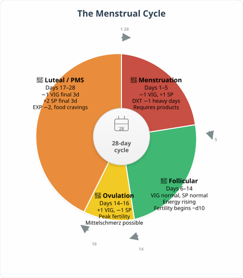
Characters should track their cycle. This can be done with a calendar, app, or period tracker:
Menstrual characters need supplies. Running out mid-period has real consequences:
| Product | Cost/Cycle | Duration | Comfort | Notes |
|---|---|---|---|---|
| 🩸 Pads | $3–$8 | 3–8 hrs | 🟠 Basic | Readily available. Bulky. Leak risk if not changed. |
| 🩸 Tampons | $3–$10 | 4–8 hrs | 🟡 Good | More freedom. TSS risk if >8 hrs (rare: 1d100, 99–100 = TSS, −3 VIG). |
| 🩸 Cups | $0.50 (one-time $25–$40) | Up to 12 hrs | 🟢 Best | Most cost-effective. Learning: DXT TN 8 to insert. |
| 🩸 Period underwear | $0.75 (one-time $30–$50) | 8–12 hrs | 🟢 Best | Comfortable. Alone for light flow; combo for heavy. |
| 🩸 Menstrual disc | $0.50 (one-time $25–$35) | Up to 12 hrs | 🟢 Best | Similar to cup, sits differently. Learning curve. |
Annual menstrual product cost: $30–$120 for disposables; $25–$50 one-time for reusables. This is a real, ongoing financial burden that characters must budget for.
Running out of supplies: If a character's period starts unexpectedly and they have no products, they must find an alternative. INT check (TN 8) to locate a store or borrow from someone. Failure = leak incident: +2 SP (embarrassment/stress), possible social penalty if at work/school.
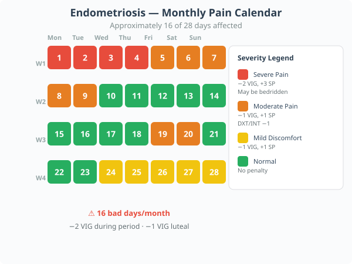
Endometriosis is a severe chronic condition affecting ~10% of menstruating people. It occurs when tissue similar to the uterine lining grows outside the uterus, causing severe pain, infertility, and organ damage.
| Aspect | Effect |
|---|---|
| VIG | −2 VIG during period (severe cramps). −1 VIG during luteal phase. |
| SP | +3 SP during period. +1 SP during luteal phase. Chronic pain: +1 SP/week baseline. |
| Time | Periods may last 7–10 days. Character may be bedridden 2–4 days per cycle. |
| Pain | Chronic pelvic pain: DXT −1, INT −1 on bad days (2–3 days/wk outside period). |
| Fertility | Conception chance reduced by 40–60%. See fertility issues table above. |
| Treatment | Hormonal therapy ($50–$300/mo), pain meds, or surgery ($5,000–$25,000). Surgery: 6–24 mo relief before return. |
| Diagnosis delay | Average 7–10 years of symptoms. INT TN 12 each year to advocate for proper diagnosis. Many suffer for years before being believed. |
Priya has undiagnosed endometriosis. Each cycle: her period lasts 9 days. Days 1–4 she's at −2 VIG and +3 SP, often staying home (losing work/school time). Days 5–9 she's at −1 VIG and +1 SP. During the luteal phase (7 days before her period), she's at −1 VIG and +1 SP. That means roughly 16 days per month she's operating at a penalty. Her annual menstrual product cost is $60 (she uses pads and heating pads). She's been telling doctors about her pain for 3 years. Each year she rolls 2d10 + INT mod against TN 12 to be taken seriously. With INT 5 (mod 0), she's rolled failures all three years. The fourth year she rolls a 9 and a 5 = 14. Breakthrough! A new doctor orders an MRI and refers her to a specialist. Surgery is scheduled: $15,000, but her insurance covers 80%. Out-of-pocket: $3,000.
This section deals with sexual assault and trauma. If any player has indicated this topic as a Line (off-limits), this entire section is skipped. Even if it's a Veil (fade-to-black), the GM should handle all sexual trauma content off-screen. The following mechanics exist for characters who have experienced sexual trauma before the campaign began, or for situations where the player has explicitly consented to explore this topic.
Never use sexual trauma as a "plot twist" or punishment. Never describe the assault itself. Always focus on recovery, agency, and healing.
Before any trauma-related content, the table must establish:
Topics that will NOT appear at all. If "sexual assault" is a Line, it never happens to any character, PC or NPC.
Topics that may happen but are never described. Referenced as backstory but never depicted at the table.
An immediate stop signal (red/yellow/green) requiring no explanation from any player at any time.
How the table checks in after heavy content: a break, a check-in question, or a scene shift.
Any player can change a Line or Veil at any time, for any reason, with no justification required.
Characters may have experienced sexual trauma before the campaign began. This is established during character creation only if the player chooses. The player describes the broad nature of the trauma (e.g., "my character was assaulted years ago") without detail. The GM then applies the following mechanical framework:
| Mechanic | Effect | Notes |
|---|---|---|
| Trigger | Character has a Trigger related to the trauma. Common: unexpected touch, certain locations, authority figures, specific smells/sounds. | When triggered: +3 SP. RES TN 12 or gain an Episode. |
| Baseline SP increase | +2 SP each week from hypervigilance and emotional carry. | Not a penalty — reflects real cost of carrying trauma. Reduced through treatment. |
| Relationship effects | Each intimate encounter: 1d100, on 1–15 = trigger activated. Decreases with treatment and trust. | The character is not "broken" — reflects realistic trauma response. Safe relationships reduce this chance. |
| Hypervigilance bonus | +2 to EXP checks to detect threats or read dangerous situations. | Trauma survivors develop real protective skills. This is a strength, not just a weakness. |
Recovery from sexual trauma is a long-term arc, measured in months or years, not scenes. It is nonlinear — progress, setbacks, and plateaus are all normal.
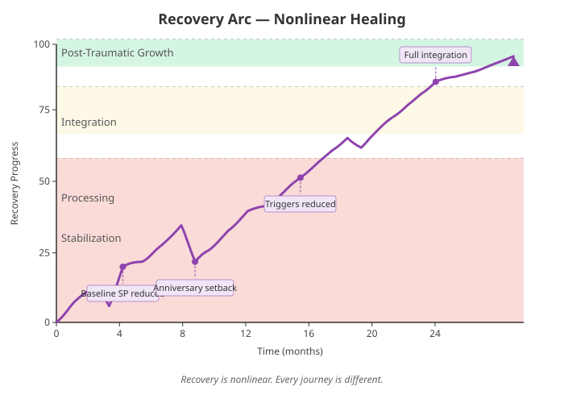
Therapy cost: $50–$200/session without insurance; $0–$50 with insurance. Finding a trauma-specialized therapist: INT check (TN 10). Waitlists are real — 1–6 months before first session is common.
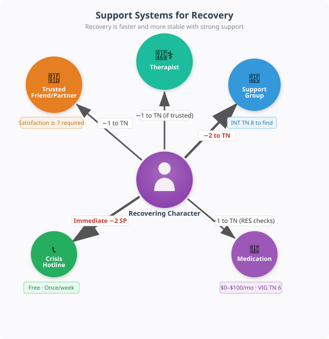
Recovery is faster and more stable with strong support:
Recovery is not linear. Setbacks are normal and expected:
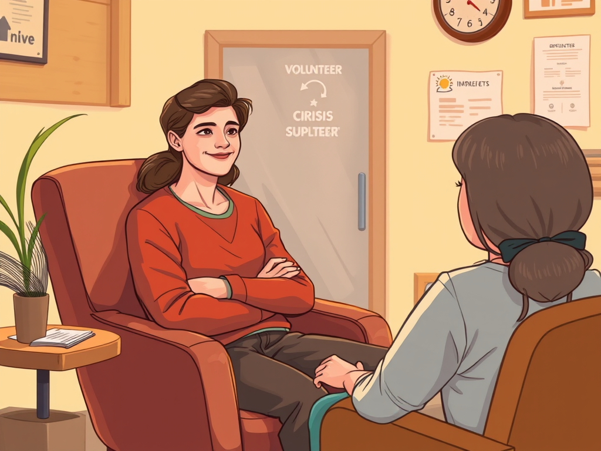
Jordan (RES 8, INT 6) experienced sexual assault 2 years before the campaign. The player chose to include this backstory. Jordan has a Trigger for "being physically restrained" and starts each week at +2 SP baseline.
Month 1–3 (Stabilization): Jordan finds a therapist (INT TN 10: rolls 5+4=9, failure — takes 3 months to get an appointment). Each weekly session: RES TN 10. Jordan succeeds 4 out of 12 sessions. By month 3, baseline SP drops from +2 to +1.
Month 4–8 (Processing): RES TN 12. Jordan succeeds 6 out of 20 sessions. Setback in month 6 (anniversary: +3 SP, but uses crisis hotline for −2 SP, net +1). By month 8, triggers reduced to +2 SP.
Month 9–14 (Integration): Sessions now biweekly. RES TN 14. Jordan's supportive partner provides −1 to TN. Succeeds 8 out of 26 sessions. Baseline SP eliminated. Triggers now only +1 SP. Jordan can engage in intimacy without fear of triggering.
Month 15+ (Post-Traumatic Growth): Jordan has integrated the experience. Gains −1 to all future RES checks. Starts volunteering at a crisis center (mentor role). The trauma is part of Jordan's story but no longer defines it.
The recovery arc above is a template. Each character's journey is different. Some heal faster; some take longer. Some choose not to pursue formal therapy and heal through community, spirituality, or other means. The player always leads — the GM supports. If the player wants to fast-forward through recovery, that's valid. If they want to play through every session, that's valid too.
Pregnancy effects, cramps, physical stamina, sexual function, birth endurance
Finding providers, navigating medical systems, understanding results, locating resources
Coming out conversations, relationship navigation, therapy effectiveness, reading social situations
Physical comfort during intimacy, menstrual product management, balance during pregnancy
Minority stress resistance, emotional processing, therapy progress, trauma recovery, aftercare
Cycle tracking accuracy, contraception consistency, medical adherence